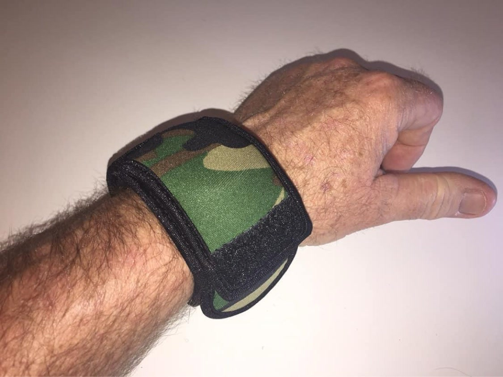

From the blog
Range Day Ready: Keep Your Watch Safe When You Shoot
October 20, 2026

A day at the range is rough on gear. Hot brass in the air, concrete benches, steel target frames, gravel underfoot, and a rifle stock that meets your wrist a hundred times before lunch. Your watch rides right through all of it. Here is how to keep it safe while you shoot.
Brass is hotter than you think
Ejected brass does not always fly clear. It bounces off lane dividers, lands on benches, and finds its way onto forearms and wrists. A hot casing kissing a watch crystal or melting into a band leaves a mark that does not buff out. A neoprene sleeve takes that heat so your watch does not have to.
Benches, rests, and barricades
Shooting benches are concrete, wood, or steel, and none of them are kind to a watch case. Every time you settle in behind the rifle, your wrist drags across the rest. Barricade work is worse. Cinder block and rough lumber will chew up a bezel in a single stage. Cover the watch before the first string and stop thinking about it for the rest of the day.
It stays out of your way
The sleeve is slim enough that it does not snag on slings or catch on kit. The face flap folds down when you need to check the time between stages and flips back up when you are done. Your watch stays readable and protected at the same time, which is the whole point.
Think about the long gun too
It is not just pistols. Prone rifle work grinds your support side wrist into the mat, the dirt, or the gravel. Shotgun recoil slams the stock against everything near it. If you run a precision rifle, you already know how many times a day your wrist meets the bipod legs and the rear bag. Every one of those contacts is a scratch waiting to happen.
After the range
Gunpowder residue, lead dust, and cleaning solvents are not friends of a watch finish. When the day is done, wipe the sleeve down and rinse it if it needs it. Your watch underneath stays clean, which beats scrubbing carbon out of a bracelet link by link at the kitchen sink.
You protect your eyes and ears at the range without thinking twice. Your watch deserves the same habit. Slip the sleeve on with the rest of your kit before you leave the house, and it is one less thing to worry about all day.
Shoot hard, keep your watch safe
Medium $23 fits watches up to 48mm. Large $25 fits up to 53mm. Five colors.
Order Yours More Tips